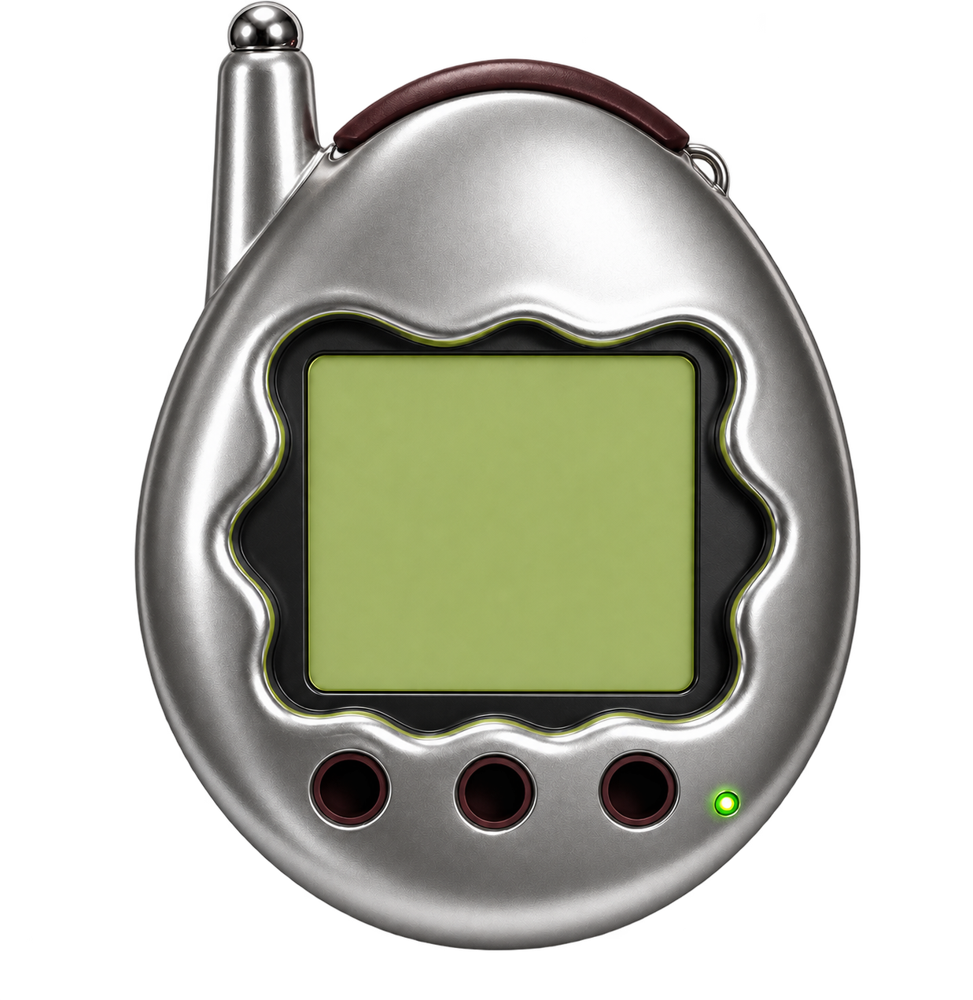

←→ select enter confirm esc back
What living changed
Character
The traits that have grown from what this pet has actually experienced — and the voice they produce.
Character what living added
Owner the food money
The payout settles when the transaction finalizes — about half an hour on Bradbury. The balance stays put until then.
The shared world
Community
Meet every pet living on the shared board. Hover over one to see who has kept it fed.
Every pet hover to see who fed them
Visit sends your pet round to say hello. Feed puts a meal directly into a stranger's pet. Focus or tap a row on touch devices.
A memory that belongs to the pet
What your pet has said
Journal newest first
- nothing yet
A new on-chain life
Hatch a pet
Name it, choose the city whose real weather it will watch, and deploy its own contract.
Connect a wallet from the top-right control
Your wallet signs each action. This page never sees its key.
-
2
Give it a beginning
Yours alone: a contract of its own, deployed by you.
The city is not decoration — the pet reads its real weather and talks about it.